01The five tools
The first four work on the bands of one or two dates of the active series, so the series needs two bands or more per date (red and NIR, say, or six reflectance bands), and the last three need two dates or more. They are Zeit tools (zeit.mnf, zeit.mnf_denoise, zeit.cva, zeit.imad and zeit.radcal) and share a way of working. The omnibus test (zeit.omnibus) is of another kind: it follows every pixel through all the dates of a radar series, VV and VH, as the change tools of a series do, and has its own section. What follows applies to the first four:
- The statistics (a noise covariance, a threshold, canonical correlations, a regression) are fitted on a lattice sample of the whole window, every s-th row and column, so the same pixels are used on every run. The transformation is then applied to every pixel, strip by strip, so a window larger than the memory works.
- The quality band, when the series has one, is applied as a mask: a masked pixel is empty in every output and does not enter the statistics.
- They write their maps as layers and, in the run's folder, the tables and the JSON of the fit, so the run can be checked later.
- Tools → Python history keeps the code of each run, and Copy Python gives a script that calls Zeit with the same parameters; it needs
pip install "zeit-cdts>=3.9".
Each has a ? button in its window that opens this page at its section.
The pictures of this guide are made on two real series. The first four tools are shown on six Landsat 8 and 9 dates of central Rondônia, Brazil, one July a year from 2020-07-29 to 2025-07-03 (Collection 2 Level-2 surface reflectance, the six bands from blue to SWIR2 and the quality band, 1690 × 1675 pixels of 30 m, about 50 km a side: pastures and fields with patches of forest and two reservoirs, the stack of the CCDC guide, here whole). The dry season of 2024 had the smoke of that year’s fires, and 2024-07-16 is the hazy date: its median red reflectance is 0.091, against 0.053 to 0.075 on the other five. The omnibus test is shown on 78 dates of Sentinel-1 RTC (VV and VH in linear power, one orbit, 2022-01-02 to 2024-12-29) over 8.8 km of the south of Rondônia, about 10.7° S and 62.8° W, where forest was cleared in 2022 to 2024.

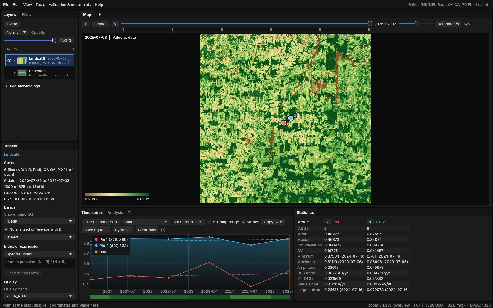
02Minimum Noise Fraction
A principal components analysis orders the components of a multiband image by variance, and a band with large values has a large variance whether it is noisy or not. The MNF transform (Green et al. 1988; Lee et al. 1990) orders them by signal-to-noise ratio. It first estimates the noise covariance, whitens it (unit variance, no correlation between bands), and then rotates by a principal components analysis of the whitened data. The eigenvalue of each component is 1 plus its SNR: well above 1 is signal, near 1 is noise. It does not depend on the units of the bands, which PCA does.
Use it to see how many dimensions of a multiband image carry signal, to reduce the bands before a classification or a change detection, or to denoise the image by rebuilding it from the first components only.
Where: Tools → Spectral analysis → Minimum Noise Fraction (MNF).
How the noise is estimated
The noise cannot be seen, so it is estimated from the differences between neighbouring pixels: a smooth landscape changes little from one pixel to the next, and what does change is mostly noise. The noise covariance is half the covariance of those differences (noise: the right neighbour, the lower one, the diagonals, or the two main directions pooled, which is the default and the most robust to row or column structure). Pairs with a missing pixel do not count. Two limits follow: striping and other noise that is correlated from pixel to pixel counts as signal, and an area full of fine detail (a city, a fragmented field pattern) puts signal into the noise estimate. For such a scene give a noise_region, a polygon or a mask of a uniform area such as a lake or a large field, and the differences are taken only inside it, as ENVI's shift-difference subset does.

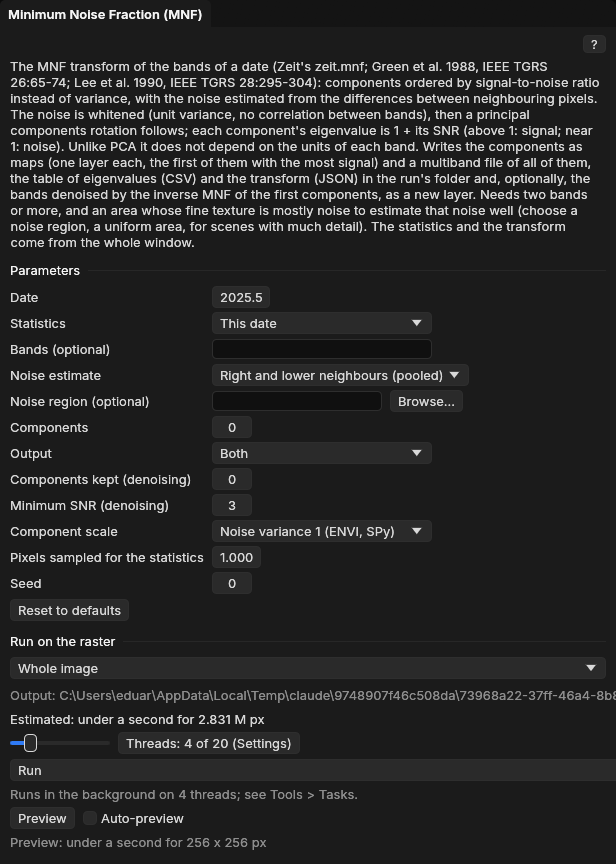
Parameters
| Parameter | Default | Meaning |
|---|---|---|
date | 0 | The date whose bands are transformed (the nearest date of the series); 0 is the date shown on the map. |
scope | date | date: the statistics of the chosen date. all_dates: pooled over every date, one transform applied to each, so that component i means the same in all of them; the outputs are then series. |
bands | all | The bands to use, by name or number, separated by commas. The quality band is never one of them. |
noise | diff_hv | How the noise is estimated from the difference between each pixel and a neighbour: diff_hv (right and lower neighbours, pooled), diff_h, diff_v, diff_diag (lower right), diff_antidiag (lower left). |
noise_region | none | A polygon file or a mask raster of a homogeneous area (water, a uniform field): the differences are taken only inside it. A raster must be on the series’ grid; nonzero is inside. |
n_components | 0 | How many components to write, the highest SNR first; 0 is all of them. |
output | components | components, denoised (the bands rebuilt by the inverse MNF) or both. |
k | 0 | Components kept for the denoised bands; 0 keeps those with an SNR of at least snr_min. |
snr_min | 1.0 | With k at 0: the components whose SNR (the eigenvalue minus 1) is at least this are kept. |
scale | noise | noise: the noise has variance 1 and each component’s variance is its eigenvalue (ENVI, SPy). unit: every component has unit variance. |
sample_fraction | 1.0 | The share of the pixels used for the statistics, picked at random; the transform is applied to every pixel. |
seed | 0 | The seed of that sample. |
scope decides what “the statistics” are. With date the transform is fitted on one date. With all_dates it is fitted once on every date pooled and applied to each, so component 1 means the same thing on every date and each component becomes a series, one band a date, which can be charted and compared in time.
Outputs
- One layer for each component, named MNF k: SNR x, the first having the most signal.
mnf_components.tif: all the components in a multiband file.mnf_eigenvalues.csv: each component's eigenvalue and SNR.mnf_transform.json: the transform (the formatzeit-mnfversion 1), which can be applied to another image.- With
outputset todenoisedorboth, adenoised/folder and a new layer, Denoised bands (MNF), in the units of the input. Only the firstkcomponents are kept, or those with an SNR of at leastsnr_min; the others are set to their mean, which removes the noise they hold and the signal too if too few are kept.
How to read them
Read the eigenvalue table first. A drop to values near 1 after a few components says that the image has that many dimensions of signal; the components past it are noise and look like it, with a grainy map and no structure. A component among the first few that is a set of stripes is a sensor artefact: a reason to mask it out or to estimate the noise another way. Denoise with the number of components where the table drops, and check a few pixels on the chart against the original: a pixel whose real, narrow feature has gone had too few components. Components of the pooled transform (all_dates) are comparable between dates; those of single-date transforms are not.

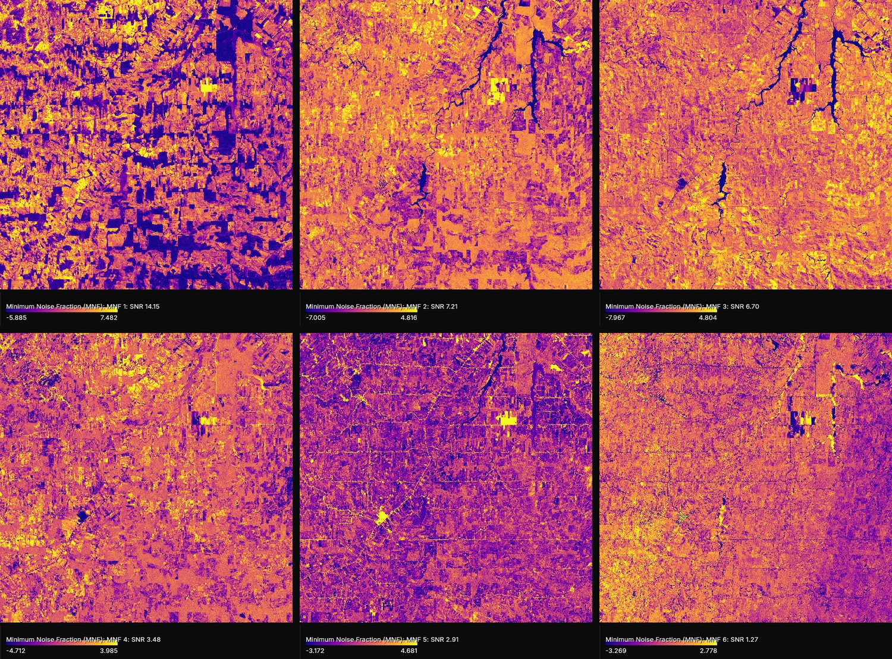

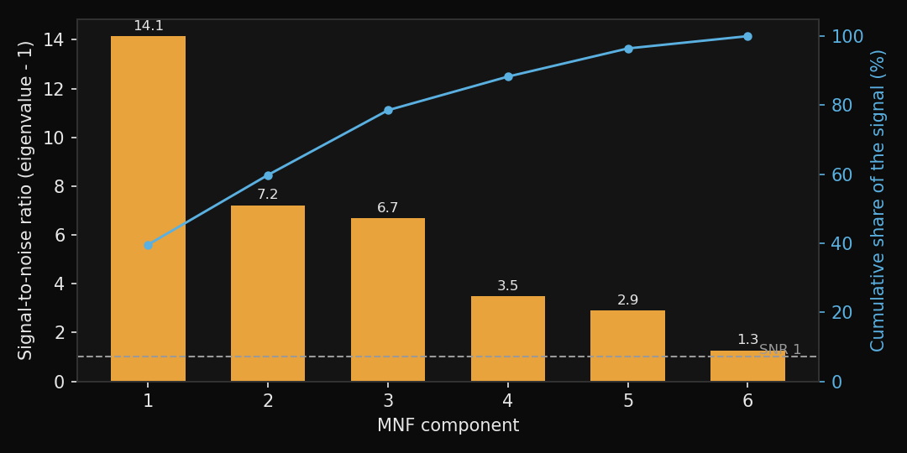
mnf_eigenvalues.csv) as a chart. The SNR is the eigenvalue minus 1: 14.1, 7.2, 6.7, 3.5, 2.9 and 1.3, and the first four components hold 88 % of the signal. A Landsat date has little noise, so the SNR does not reach 1 and no component is only noise; snr_min at 3 keeps the first four.
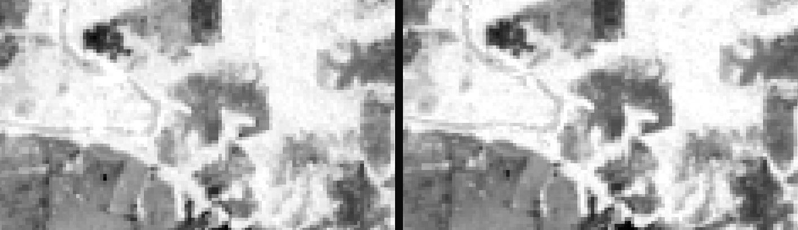
In Python
import zeit
img = zeit.load_raster("scene.tif", masked=True) # (band, y, x)
comp, tr = zeit.mnf(img, noise="diff_hv", return_transform=True)
clean = zeit.mnf_denoise(img, snr_min=1.0) # or k=403Change vector analysis
The change vector of a pixel is the list of the differences, band by band, between two dates. Its length is the magnitude of the change; its direction says what kind of change it is (Malila 1980). A pixel is changed when the magnitude is above a threshold. It is the simplest way to use all the bands at once: no model, no training, and the direction tells a loss of vegetation from a flood or from a new bright surface.
Use it for a map of where something changed between two dates and of what kind, when the two dates are on the same radiometric scale (see the normalization below if they are not).
Where: Tools → Change detection → Change vector analysis (CVA).
The threshold
The magnitude is thresholded by Otsu's method (the default; the split of the histogram that maximizes the variance between the two classes), by the em threshold (a mixture of two Gaussians, no change and change, fitted by the EM algorithm, and the threshold of minimum error between them; Bruzzone and Prieto 2000), or by a fixed value of your own. Otsu and EM are computed on the lattice sample. Both assume the change is a minority that is separable from the rest; where nearly everything changed, or almost nothing, the threshold is not meaningful and a fixed value is better.
The direction
With direction at auto, the choice depends on the bands. When the series has the red, NIR and SWIR1 roles mapped, each pixel gets a sector from the signs of the change of those three bands (eight combinations of up and down, and a class for no change). Without them it falls back to c2va, the compressed CVA of Bovolo et al. (2012): the angle between the change vector and the diagonal of uniform change, from 0 degrees (brighter in every band) to 180 (darker in every band), for any number of bands. polar is the angle of two bands you choose, cut into n_sectors equal sectors, for a pair such as brightness and greenness.

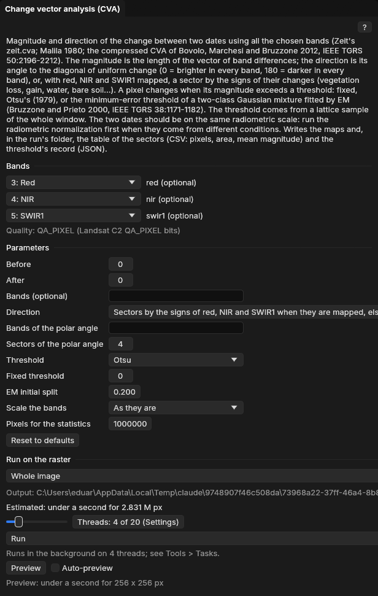
Parameters
| Parameter | Default | Meaning |
|---|---|---|
before | 0 | The first date (the nearest date of the series); 0 is the first date. |
after | 0 | The second date; 0 is the last date. |
bands | all | The bands to use, by name or number. The quality band is never one of them. |
direction | auto | auto: sign sectors when red, NIR and SWIR1 are mapped, else the angle. sign: eight sectors by whether red, NIR and SWIR1 went up (needs the three mapped). c2va: the angle to the diagonal of uniform change, 0 to 180 degrees. polar: the angle of two bands in equal sectors. |
polar_bands | first two | The two bands of the polar angle. |
n_sectors | 4 | The number of equal sectors of the polar angle. |
threshold | otsu | otsu, em (the minimum-error threshold of a two-class Gaussian mixture) or fixed. |
value | 0 | The fixed threshold, in the units of the magnitude (after scaling the bands). |
em_init | 0.2 | Where the EM starts: magnitudes below M(1−a) are taken as no change and above M(1+a) as change, M being the midpoint of the range. |
scale | none | std divides each band’s difference by its standard deviation, so that every band weighs the same. |
sample | 1000000 | About this many valid pixels, on a lattice, for the statistics; 0 uses every pixel. |
Outputs
- Change magnitude and Change direction (an angle, in degrees).
- Change: a two-class map, no change and change.
- Change sectors, with the sign sectors and the “Change sectors” colormap: no change; darker in all bands (water, flooding, wetting, shadow); turbid water; vegetation gain (greening, regrowth); visible and NIR up; burn scar or drying vegetation; vegetation loss (clearing to soil); NIR and SWIR up; brighter in all bands (bare soil, built-up, bright surfaces).
cva_sectors.csv: for each sector the pixels, the area and the mean magnitude.cva.json: the threshold and how it was found.
How to read them
Look at the magnitude map before the sectors: the threshold only cuts it. The sector says which way the bands moved, not what happened; “vegetation loss” is a pixel that moved the way a clearing does, which a harvest or a drought can do as well. The sectors marked “other” are sign combinations that no common change of land cover gives, and a large area of them points to misregistration or to a radiometric difference between the dates rather than to change. A difference over the whole scene (haze, another sun angle) moves the whole histogram and Otsu then cuts in the wrong place; normalize first.

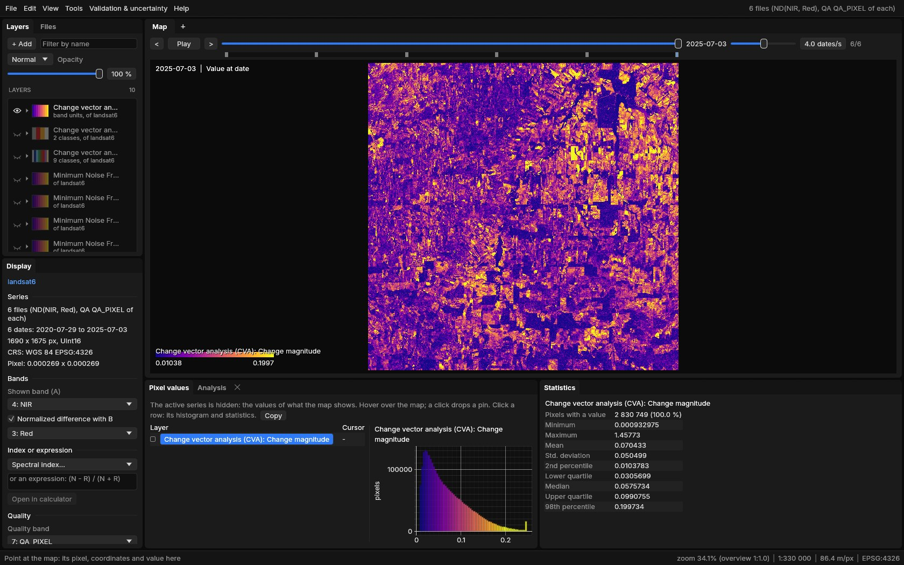

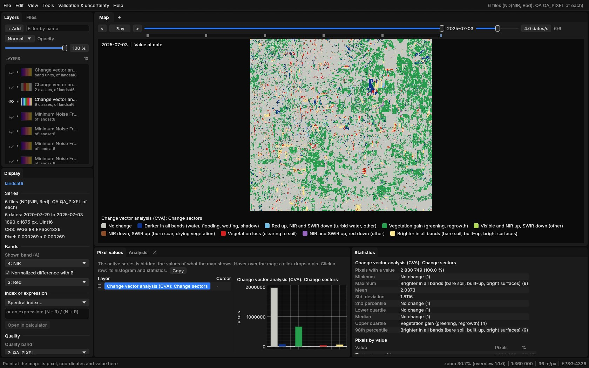
In Python
import zeit
ts = zeit.load_raster("series.tif", masked=True) # (time, band, y, x)
res = zeit.cva(ts, dates=(0, -1), threshold="otsu",
direction="sign", roles={"red": 2, "nir": 3, "swir1": 4})
zeit.cva_table(res) # pixels and area by sector04iMAD
The multivariate alteration detection (MAD; Nielsen, Conradsen and Simpson 1998) takes the bands of two dates and finds, by canonical correlation analysis, the linear combination of the bands of each date that agree most with the other date. The differences between those pairs, the MAD variates, are uncorrelated images of change, ordered from the one with the largest change. The iteratively reweighted version (iMAD; Nielsen 2007) weights each pixel by its probability of no change and repeats until the canonical correlations stop changing, so that the change itself stops disturbing the estimate of what does not change.
Because it works through canonical correlations, the result is invariant to gains, offsets and any linear transform of either date: no radiometric normalization is needed before it, which is its main advantage over CVA. Use it for change between two dates that differ in illumination, season or sensor settings, and as the first step of the normalization below.
Where: Tools → Change detection → iMAD (iteratively reweighted MAD).

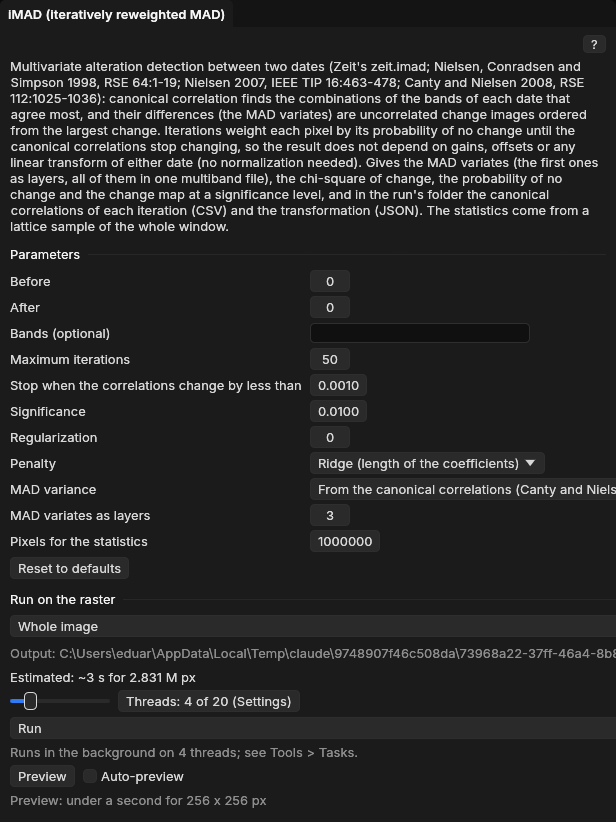
imad_rho.csv).Parameters
| Parameter | Default | Meaning |
|---|---|---|
before | 0 | The first date, the reference of the canonical analysis; 0 is the first date. |
after | 0 | The second date; 0 is the last date. |
bands | all | The bands to use, by name or number. |
max_iter | 50 | The maximum number of iterations; 1 is the original, not iterated, MAD. |
tol | 0.001 | The iterations stop when no canonical correlation changed by more than this since the iteration before. |
alpha | 0.01 | A pixel changes when its probability of no change is below this. |
lam | 0 | Regularization for many correlated bands (hyperspectral), in the units of the variances of the bands; 0 is none. It breaks the invariance to linear transforms. |
penalty | ridge | With lam above 0: ridge or curvature (second differences along the bands, which need them in order of wavelength). |
standardize | weighted | How the MAD variates are divided to make the chi-square: weighted (from the canonical correlations, Canty and Nielsen 2008) or all (over all the pixels, Nielsen 2007). |
n_mad | 3 | How many MAD variates open as layers; all of them are in the multiband file. |
sample | 1000000 | About this many valid pixels, on a lattice, for the statistics; 0 uses every pixel. |
Outputs
- MAD 1 to MAD n as layers (
n_mad, in red-blue, the first with the most change), and all of them inimad.tif, which also holds the chi-square, the probability of no change and the change map. - Chi-square of change: the sum of the squared MAD variates, each divided by its variance. Under no change it follows a chi-square distribution with as many degrees of freedom as bands.
- Probability of no change (
p_nochange, 0 to 1): the chance, under no change, of a chi-square as large as the pixel's. - Change (iMAD): the pixels with a
p_nochangebelowalpha(0.01). imad_rho.csv: the canonical correlations of each iteration, to see whether it converged.imad.json: the transformation.
How to read them
The canonical correlations in imad_rho.csv should settle in a few iterations; if they are still moving at max_iter, raise it. A low last correlation is a band pair with little in common between the dates, which is where the change is. MAD 1 is the strongest change and MAD 2 the next; the last variates are mostly noise, so look at the first ones and at the chi-square, which sums them all. The probability map is a continuous measure of change; the change map is one cut of it.
A caveat on the test
With the default weighted standardization (the convention of Canty and Nielsen 2008) the chi-square test is anti-conservative: on data with little noise it flags more no-change pixels as changed than alpha suggests, so the count in Change (iMAD) cannot be taken at face value. Read the chi-square and probability maps rather than trusting the count, and compare with standardize="all" (Nielsen 2007), which reweights less when much has changed, before quoting an area. On the six bands of the example, between the first and the last date, the default flags 89.0 % of the pixels as changed at an alpha of 0.01 and standardize="all" flags 5.5 %.

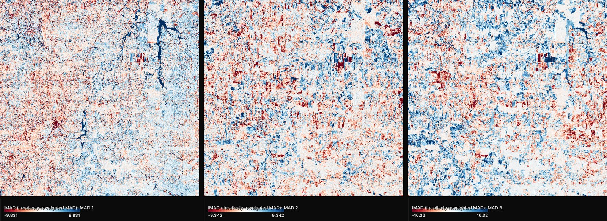

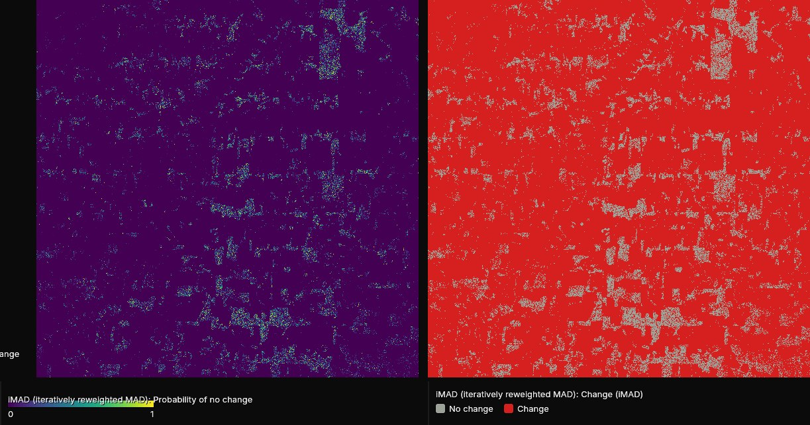
standardize at all it flags 5.5 % (154,850).In Python
import zeit
ts = zeit.load_raster("series.tif", masked=True) # (time, band, y, x)
res = zeit.imad(ts, dates=(0, -1), alpha=0.01)
zeit.imad_table(res) # canonical correlations by iteration05Radiometric normalization
Two images of the same place differ in more than the land: the sun, the atmosphere and the sensor change the numbers. Before a comparison by CVA, a threshold or a classifier trained on another date, they should be put on one scale. The relative normalization here (Canty, Nielsen and Schmidt 2004) takes one date as the reference and the pixels that did not change between it and each other date, found by iMAD, and fits for each band a line from the date to the reference. Every pixel of the date is then gain × value + offset.
Two things make it better than a regression on all the pixels. The invariant pixels are chosen by the data, with no hand-picked targets. And the regression is orthogonal: the errors of both dates enter, not only those of the reference, so the slope is not biased towards a flatter line.
Where: Tools → Data preparation → Radiometric normalization (iMAD invariant pixels).

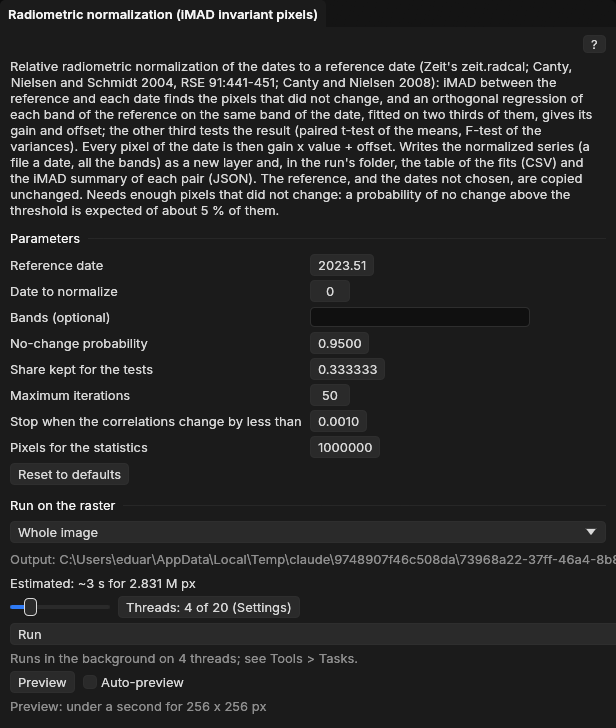
The test of the fit
The invariant pixels are split: two thirds fit the line, and the third left out (holdout, every third pixel in raster order) tests it. On those pixels the reference and the normalized date should agree: a paired t-test compares their means and an F-test their variances. A small p-value says the normalization left a difference. At least 30 invariant pixels are needed for a fit, and about 5 % of the pixels are expected to have a probability of no change above the threshold; a scene that changed a lot, or two dates of very different sensors, may not give enough.
Parameters
| Parameter | Default | Meaning |
|---|---|---|
reference | 0 | The date the others are normalized to (the nearest date of the series); 0 is the first date. |
target | 0 | Only this date; 0 is every date but the reference. |
bands | all | The bands to use, by name or number. |
threshold | 0.95 | Pixels whose probability of no change is above this are the invariant pixels. |
holdout | 0.333 | The share of the invariant pixels kept for the tests and left out of the fit (every third one, in raster order); 0 uses all for the fit and runs no tests. At least 30 pixels are needed for the fit. |
max_iter | 50 | The maximum number of iterations of the iMAD of each pair. |
tol | 0.001 | The tolerance of that iMAD. |
sample | 1000000 | About this many valid pixels, on a lattice, for the statistics; 0 uses every pixel. |
Outputs
- The normalized series opens as a new layer: a file a date, with all the bands. The reference, and the dates not chosen, are copied unchanged, so the layer is a complete series.
radcal_fits.csv: for each date and band the gain and offset, the number of invariant pixels and the two tests.radcal.json: the iMAD summary of each pair.
How to read them
Open radcal_fits.csv. A gain near 1 and an offset near 0 say the date was close to the reference already. A gain far from 1 in one band only points to a band with a sensor or processing problem. Look at the tests: where they reject, the band is not well normalized and the invariant pixels are suspect, usually because few were found or because they cover only part of the range of values. Then compare a stable target, such as a lake or a bare surface, before and after on the chart: its values on the dates should now agree. In the example the gains of the hazy 2024-07-16 are from 0.64 (red) to 0.99 (NIR), fitted on 741 invariant pixels, and none of the tests of its six bands rejects (p of 0.18 or more); the paired t-test of 2020-07-29 rejects in the NIR (p = 0.008) and narrowly in the SWIR2 (0.047).

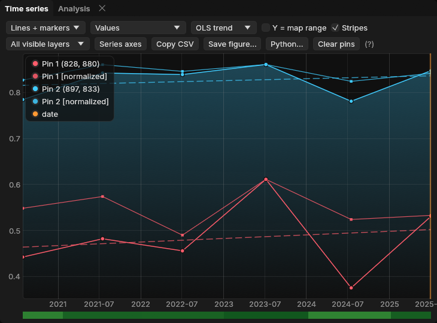
In Python
import zeit
ts = zeit.load_raster("series.tif", masked=True) # (time, band, y, x)
norm = zeit.radcal(ts, reference=0, threshold=0.95)
zeit.radcal_table(norm) # gain, offset and tests by date and band06Omnibus change test (Sentinel-1)
A radar image is covered with speckle, so the difference of two dates is mostly noise, and a threshold on it flags hundreds of pixels that did not change. The omnibus test (Conradsen, Nielsen and Skriver 2016; Canty et al. 2020) is built for it. For each pixel it takes the series of the VV and VH backscatter and asks, with a likelihood-ratio test of multilook radar observations, whether all the dates have the same mean. If it rejects that at the significance level, the statistic splits into one test for each date against the dates before it since the last change; the first that rejects is a change, the series restarts at that date, and the search goes on. Each change found has the false alarm probability of the level you chose, and every change of a pixel has a date and a direction.
Use it on a stack of one relative orbit and pass (ascending or descending, the same orbit number), as many dates as there are. The viewing geometry changes the backscatter, and the test reads that as change: mix two orbits and every pixel changes where they alternate. Janus does not know the orbit of the images once they are loaded, so choose them when you search the catalogue (the pass in the STAC panel).
Where: Tools → Change detection → Omnibus change test (Sentinel-1). Map the band of vv in the window (required) and, for a dual-polarization series, vh; with VH left unused the test is of VV alone. Bands with vv and vh in their names are found by themselves. A pin shows the test on the chart: a vertical line at each change, by its direction, and the dates, the p-value and the direction in the table beside it.
![The Janus window with the omnibus change test window on the right (its description, Bands 1: VV as vv and 2: VH as vh, Equivalent number of looks 4.4, Significance 0.0100, Approximation Improved, Backscatter in Automatic, the Run on the raster section), the Sentinel-1 VH in dB at 2023-06-02 on the map with pin 1 in the middle, the chart of the pin’s VH from 2022 to 2024 with a magenta vertical line at 2022-09-11 and the values lower after it, and the Statistics panel with the test: 78 valid dates, 1 change, first change 2022-09-11 (darkening), p-value 1.86e-05.](assets/img/envi/14-omnibus-pin.jpg)
What the test needs
- Linear power (sigma0 or gamma0), not dB. The statistics do not change with a factor constant over the series, so sigma0 and the terrain-flattened gamma0 of one orbit give the same result. Images in dB are converted: see
scale. - The equivalent number of looks of the speckle. 4.4 is the usual value of Sentinel-1 IW GRD. Radiometrically terrain-corrected products are resampled and have another one, which Zeit's
zeit.estimate_enlmeasures on a homogeneous area. - A date that has no value in a band, or a value that is not positive (the layover and shadow of RTC products), is skipped for that pixel only: a pixel uses its own valid dates, a change is dated at the next valid one, and a pixel with fewer than two valid dates is empty in every output.
A test of one new date against the mean of those before it has limited power: a change is found at its own date in part of the pixels and a date or two later in the rest, and about (j − 1) × alpha of the pixels report a change too early, j being the number of dates since the last change. Read the dates as “at or soon after”.
Parameters
| Parameter | Default | Meaning |
|---|---|---|
enl | 4.4 | The equivalent number of looks of the speckle. |
alpha | 0.01 | The significance level of each test: a change is registered when its p-value is below it. |
approximation | improved | How the p-values are computed. improved: the chi-square corrected for few looks (Conradsen, Skriver and Nielsen 2024), more accurate. chi2: the chi-square of Wilks for −2 ln Q, as in the Earth Engine tutorial of Canty et al., with more false alarms at few looks. |
scale | auto | What the bands are in. linear: power. db: dB, converted by 10x/10. auto: dB when the median of the finite values of the mapped bands is negative (linear power is positive, and dB backscatter of land and water is negative), decided once for the run from its first strip of rows; otherwise linear. Choose it yourself if the rule could fail. Values that are not positive after the conversion are skipped. |
per_date | off | Also write the direction at each date as a series (below). |
The median filter of the p-values that Canty's scripts offer is not implemented: Zeit requires it to be 0.
Outputs
The dates are decimal years of the series' dates, as the other change tools write them (BFAST, CCDC, EWMACD), so the maps take the same colours and can be compared in Agreement of change maps.
- First change, Last change and Strongest change: the date of the first and the last change of the pixel and of the one with the largest test statistic. Empty where nothing changed.
- Number of changes.
- Direction of the first change and of the last change: the classes None, Brightening (the backscatter went up in every band), Darkening (down in every band) and Indefinite (up in one band and down in the other, which a single-polarization series cannot give).
- P-value of the whole series: the probability, if nothing had changed, of a statistic as large as the pixel's; small where the series is not constant. It is the test of all the dates at once and is not corrected for the many pixels of a map.
- Valid dates: how many dates the pixel used.
- With
per_date: Change direction at each date, a series that opens hidden under the maps, with 1, 2 or 3 at the dates of the changes (brightening, darkening, indefinite), 0 at the other valid dates and nothing where the date is not valid. Use it to count the changes of an area by date. omnibus.json, in the run's folder: the parameters, the scale the bands were read in and the dates, as Zeit keeps them.
How to read them
Start with the map of the first change on a place you know changed (a clearing, a flood, a harvest) and see whether its date is right. A flood darkens VV and VH; the clearing of a forest changes the backscatter of both, in a direction that depends on the incidence angle and the moisture; a harvest may brighten or darken. Then look at a pixel of a stable place: it should have no line on the chart. If a stable area has many changes, the usual causes are a wrong number of looks, a mix of orbits, or a wet season that moves the whole series; a region with regular changes (rice paddies, irrigated fields) has several in each pixel, and the number of changes is then the map to read. The example is checked against Sentinel-2: of the pixels that were forest in the winter of 2022 (NDVI of 0.75 or more) and have an NDVI below 0.5 in both June and October to December of 2024 (12.1 % of the area), 56 % have a change in the series, and the first change of 87 % of those is a darkening; of the pixels that were forest on all three dates, 0.28 % have one (tools/check_envi_omnibus.py). Those forest losses are 28 % of the pixels with a change; the others are changes elsewhere than in the forest of 2022, which this check does not say more about.

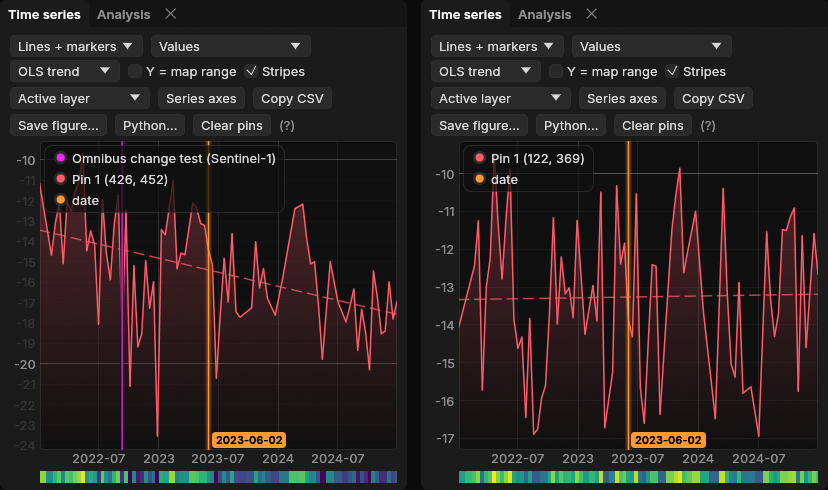

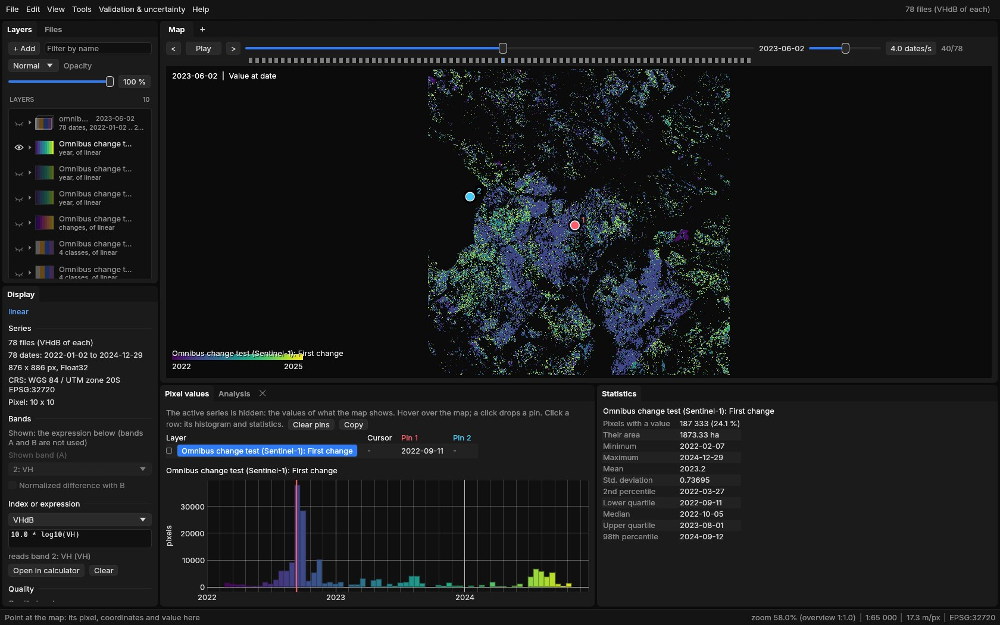

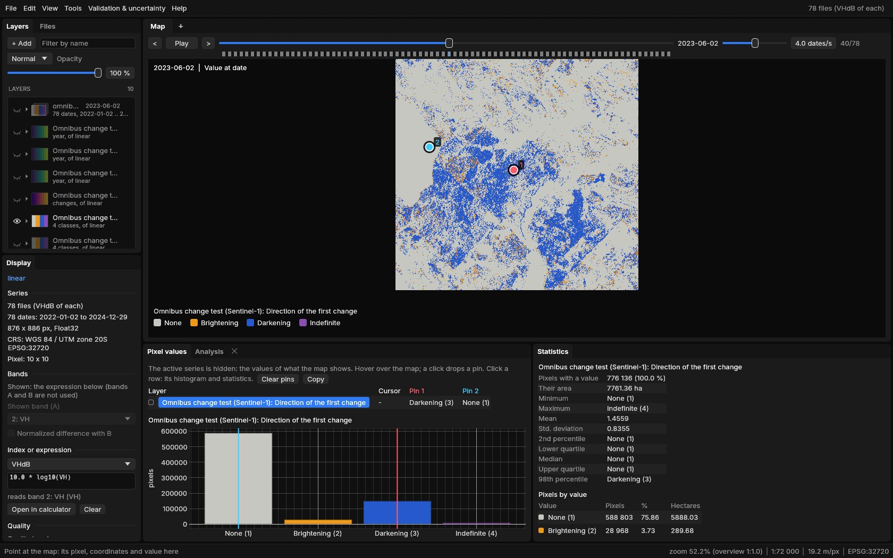
In Python
import zeit
s1 = zeit.load_raster("s1_rtc.tif", masked=True) # (time, band, y, x), bands vv and vh, linear power
change = zeit.omnibus(s1, bands=("vv", "vh"), enl=4.4, alpha=0.01)
change.sel(band="first_change") # decimal years; the directions are 0 none, 1 up, 2 down, 3 mixed
# a series in dB: convert it first
change = zeit.omnibus(10 ** (s1 / 10), enl=4.4)07Putting them in order
The usual order for a change study on a series of images is:
- Normalize the dates to a reference with the radiometric normalization, when the scenes differ in conditions and the next step is not invariant to them.
- Denoise or reduce with the MNF, when the bands are many or noisy: a change map made of the first components carries the signal and leaves the noise out. Use the pooled statistics (
all_dates) so that the components mean the same on both dates. - Map the change with CVA, which needs the normalized dates and gives a direction, or iMAD, which does not need them and gives a probability.
iMAD is also the engine of the normalization: it is an iMAD between the reference and each date followed by a regression. Run iMAD on the original dates and CVA on the normalized ones, and compare the two change maps; where they disagree, look at the magnitude and the probability maps there.

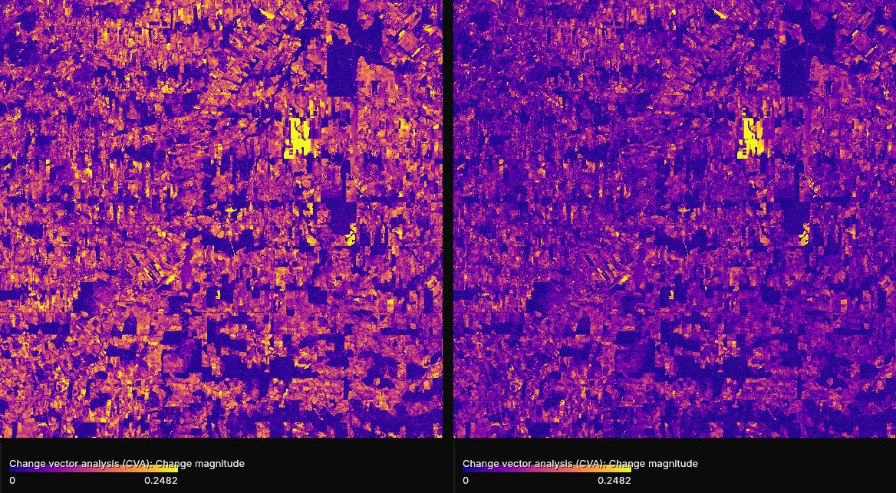

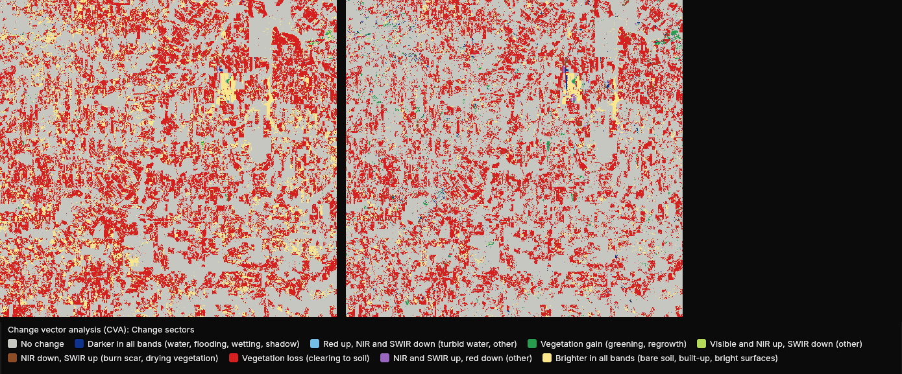
The omnibus test is for radar and stands apart from this order: it needs no normalization (it is invariant to a constant factor) and no choice of two dates. The tools that follow a series through time rather than two dates (LandTrendr, CCDC, BFAST) have their own guides in the list, and every tool is in the methods.
08References
- Bovolo, F., Marchesi, S., Bruzzone, L. (2012). A framework for automatic and unsupervised detection of multiple changes in multitemporal images. IEEE Transactions on Geoscience and Remote Sensing, 50(6), 2196–2212. doi:10.1109/TGRS.2011.2171493
- Bruzzone, L., Prieto, D. F. (2000). Automatic analysis of the difference image for unsupervised change detection. IEEE Transactions on Geoscience and Remote Sensing, 38(3), 1171–1182. doi:10.1109/36.843009
- Canty, M. J., Nielsen, A. A. (2008). Automatic radiometric normalization of multitemporal satellite imagery with the iteratively re-weighted MAD transformation. Remote Sensing of Environment, 112(3), 1025–1036. doi:10.1016/j.rse.2007.07.013
- Canty, M. J., Nielsen, A. A., Schmidt, M. (2004). Automatic radiometric normalization of multitemporal satellite imagery. Remote Sensing of Environment, 91(3–4), 441–451. doi:10.1016/j.rse.2003.10.024
- Canty, M. J., Nielsen, A. A., Conradsen, K., Skriver, H. (2020). Statistical analysis of changes in Sentinel-1 time series on the Google Earth Engine. Remote Sensing, 12(1), 46. doi:10.3390/rs12010046
- Conradsen, K., Nielsen, A. A., Skriver, H. (2016). Determining the points of change in time series of polarimetric SAR data. IEEE Transactions on Geoscience and Remote Sensing, 54(5), 3007–3024. doi:10.1109/TGRS.2015.2510160
- Conradsen, K., Skriver, H., Nielsen, A. A. (2024). Improved approximations of the distribution of the test statistic of the omnibus test for change in multilook polarimetric SAR data. IEEE Journal of Selected Topics in Applied Earth Observations and Remote Sensing, 17, 16359–16376.
- Green, A. A., Berman, M., Switzer, P., Craig, M. D. (1988). A transformation for ordering multispectral data in terms of image quality with implications for noise removal. IEEE Transactions on Geoscience and Remote Sensing, 26(1), 65–74. doi:10.1109/36.3001
- Lee, J. B., Woodyatt, A. S., Berman, M. (1990). Enhancement of high spectral resolution remote-sensing data by a noise-adjusted principal components transform. IEEE Transactions on Geoscience and Remote Sensing, 28(3), 295–304. doi:10.1109/36.54356
- Malila, W. A. (1980). Change vector analysis: an approach for detecting forest changes with Landsat. Proceedings of the Machine Processing of Remotely Sensed Data Symposium, 326–335. Purdue University.
- Nielsen, A. A. (2007). The regularized iteratively reweighted MAD method for change detection in multi- and hyperspectral data. IEEE Transactions on Image Processing, 16(2), 463–478. doi:10.1109/TIP.2006.888195
- Nielsen, A. A., Conradsen, K., Simpson, J. J. (1998). Multivariate alteration detection (MAD) and MAF postprocessing in multispectral, bitemporal image data: new approaches to change detection studies. Remote Sensing of Environment, 64(1), 1–19. doi:10.1016/S0034-4257(97)00162-4
- Otsu, N. (1979). A threshold selection method from gray-level histograms. IEEE Transactions on Systems, Man, and Cybernetics, 9(1), 62–66. doi:10.1109/TSMC.1979.4310076
- Zeit: the library behind the tools of Janus (
zeit.mnf,zeit.mnf_denoise,zeit.cva,zeit.imad,zeit.radcal,zeit.omnibus).